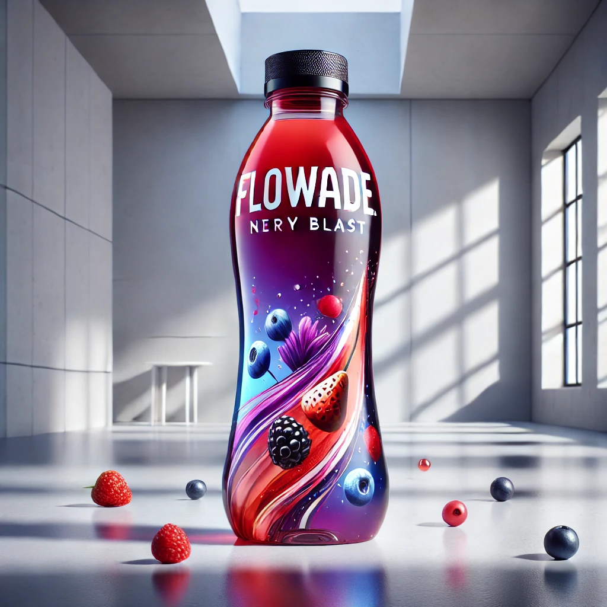
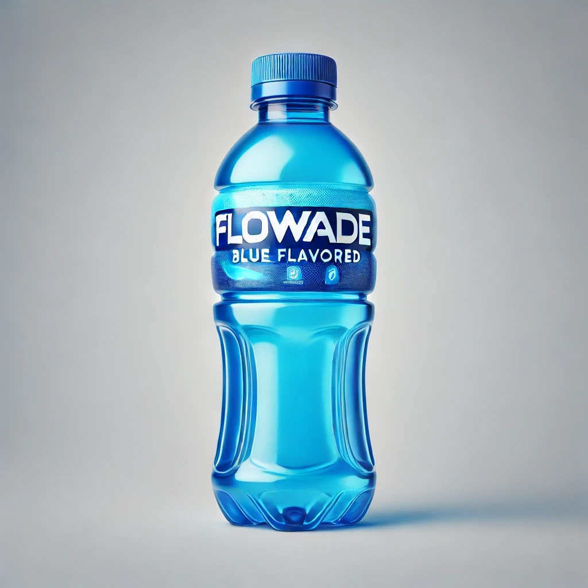
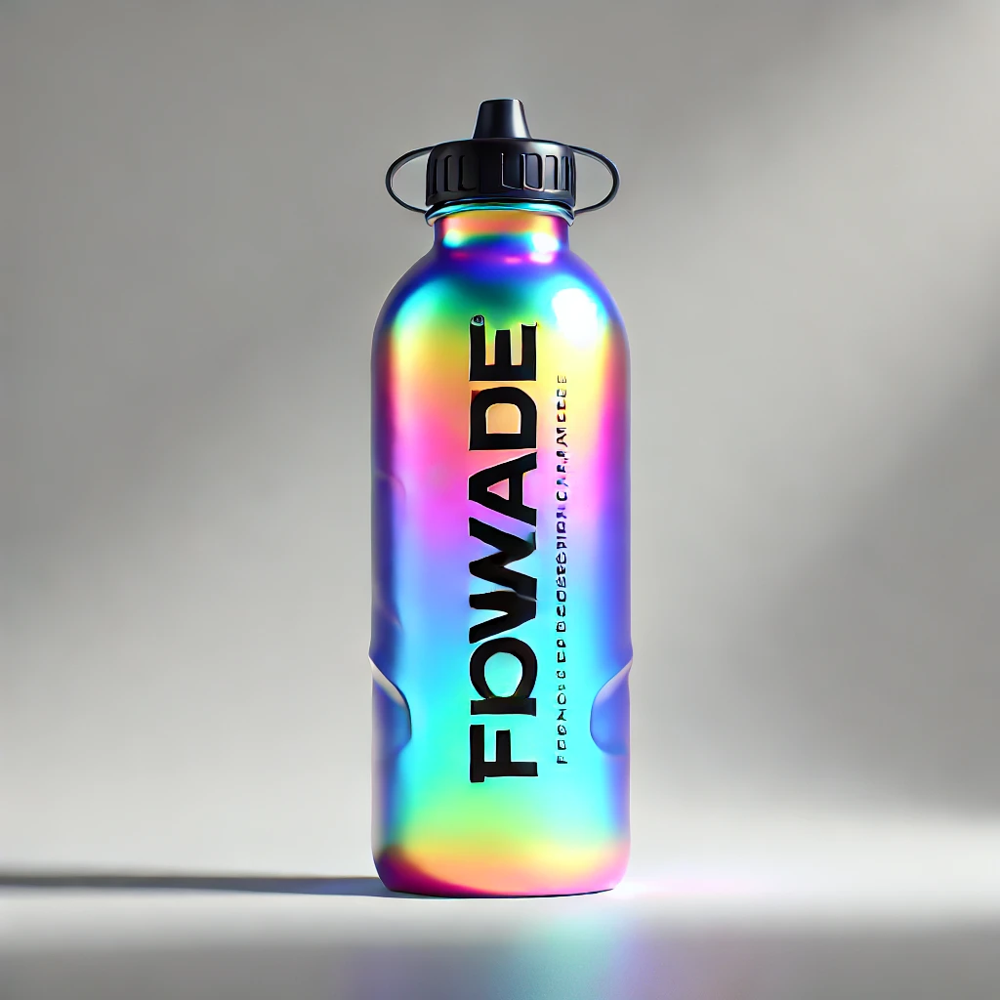
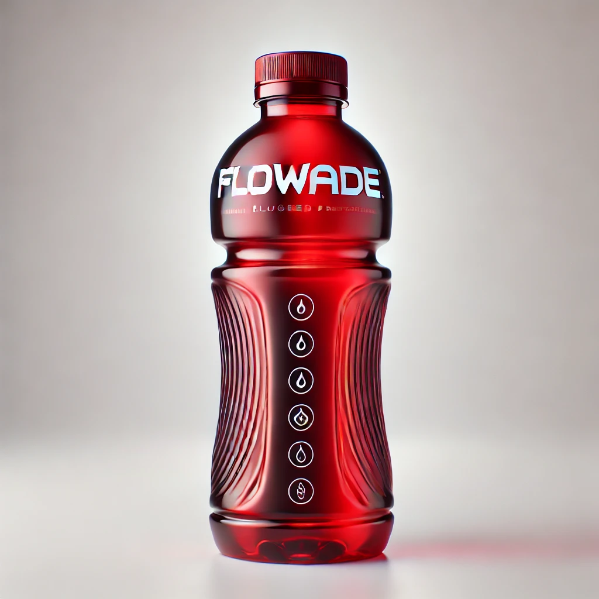
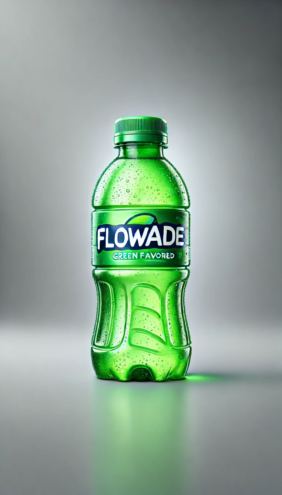
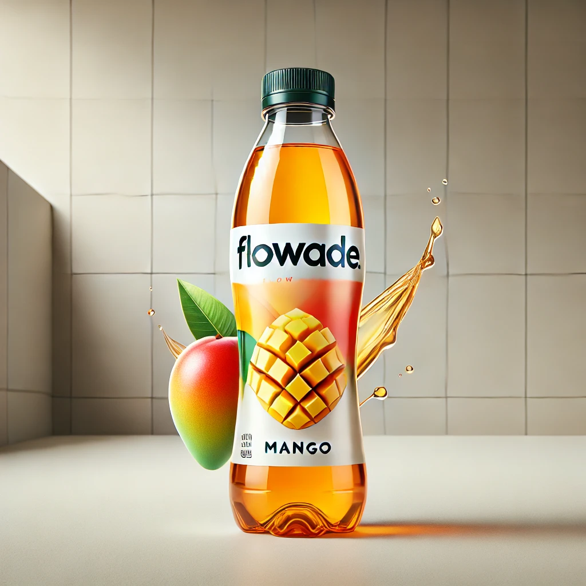

Nuestra historia
"Flowade comenzó como una idea visionaria en el campus de la Universidad ECCI, entre un grupo de estudiantes apasionados por la ciencia, la salud y el deporte. Al inicio, el equipo estaba compuesto por estudiantes de ingeniería, ciencias de la salud y diseño, quienes se unieron en un proyecto de innovación orientado a resolver un problema común: la hidratación adecuada para personas activas, especialmente en un contexto de creciente conciencia por el bienestar."
Beneficios de Flowade
- Rehidrata rápidamente los líquidos perdidos durante el ejercicio.
- Reemplaza electrolitos esenciales como sodio y potasio.
- Mejora el rendimiento deportivo al mantener el equilibrio de fluidos.
- Disponibles en una variedad de sabores para satisfacer todos los gustos.
Nuestros Productos
NeryBlast
Delicioso sabor a Uva y Fresas, ¡Explosión de sabores!.
Flowade Blue
Delicioso sabor a Mora Azul.
Flowade Tropical
Exótico sabor tropical.
Flowade Red
Intenso sabor a fresa.
Flowade Green
Refrescante sabor a manzana verde.
Flowade Mango
Clásico sabor a Mango.
Educación sobre Hidratación
La hidratación es fundamental para mantener un rendimiento óptimo y una salud adecuada, pero las necesidades varían según el clima y las condiciones ambientales. A continuación, te explicamos cómo ajustar tu hidratación en diferentes climas:
Hidratación en Climas Cálidos
En climas cálidos, el cuerpo pierde líquidos rápidamente a través del sudor para regular la temperatura. Es esencial beber agua constantemente y consumir bebidas que reemplacen los electrolitos perdidos, como Flowade, que contiene sodio y potasio. Las bebidas frías ayudan a bajar la temperatura corporal.
Hidratación en Climas Fríos
En climas fríos, aunque no sientas la misma sed que en un clima cálido, la deshidratación aún es un riesgo, especialmente al hacer ejercicio. La respiración en climas fríos expulsa más vapor de agua, y la hidratación adecuada ayuda a mantener la energía y la circulación.
Hidratación en Climas Húmedos
La alta humedad dificulta la evaporación del sudor, lo que puede llevar al sobrecalentamiento. En estos casos, además de consumir líquidos regularmente, es importante optar por bebidas con electrolitos para mantener el equilibrio de líquidos y evitar el agotamiento.
Hidratación en Climas Secos
En climas secos, el sudor se evapora rápidamente, lo que puede hacer que subestimes la cantidad de líquido perdido. Es esencial beber agua de manera regular y complementar con bebidas que ayuden a mantener los niveles de hidratación, especialmente si estás haciendo actividad física.
Flowade es tu aliado para mantener la hidratación en cualquier clima, asegurando un rendimiento y bienestar óptimos.
Educación sobre Hidratación
La Importancia de la Hidratación
La hidratación es esencial para el buen funcionamiento del cuerpo humano. El agua representa entre el 50% y el 70% de nuestro peso corporal, lo que refleja su importancia en casi todas las funciones corporales, incluyendo la regulación de la temperatura, el transporte de nutrientes y la eliminación de desechos.
Consecuencias de una Mala Hidratación
No mantenerse adecuadamente hidratado puede tener graves consecuencias para la salud, incluyendo:
- Deshidratación leve: Puede causar dolor de cabeza, fatiga y reducción de la concentración.
- Deshidratación moderada a severa: Puede llevar a mareos, taquicardia, confusión e incluso a complicaciones médicas más serias.
- Problemas crónicos: La falta de hidratación prolongada puede contribuir a enfermedades como infecciones urinarias y cálculos renales.
Beneficios de una Buena Hidratación
Al mantener una hidratación adecuada, se experimentan los siguientes beneficios:
- Mejora la función cognitiva y la concentración.
- Ayuda a regular la temperatura corporal, lo cual es vital durante el ejercicio.
- Mantiene las articulaciones lubricadas, reduciendo el riesgo de lesiones.
- Favorece una piel sana y la eliminación de toxinas.
Artículos Educativos para Padres
Los padres desempeñan un papel fundamental en la promoción de hábitos saludables de hidratación entre sus hijos, especialmente durante la niñez y la adolescencia, períodos en los que el cuerpo experimenta un rápido crecimiento y cambios fisiológicos significativos. Enseñar a los niños la importancia de mantenerse hidratados no solo favorece su desarrollo físico, sino que también tiene un impacto positivo en sus capacidades cognitivas y su rendimiento académico. Los estudios muestran que una hidratación adecuada contribuye a mejorar la memoria, la concentración y el estado de alerta, factores esenciales para el éxito escolar.
Uno de los desafíos más comunes para los padres es asegurar que sus hijos beban suficientes líquidos a lo largo del día, particularmente cuando no sienten sed. La percepción de la sed puede ser un indicador tardío de deshidratación, por lo que es importante inculcar el hábito de beber líquidos con regularidad. Las bebidas que combinan agua con electrolitos y sabores agradables, como Flowade, pueden ser una solución eficaz para incentivar a los niños a hidratarse sin recurrir a bebidas azucaradas poco saludables. Es crucial enseñarles a los pequeños a diferenciar entre bebidas que aportan beneficios, como aquellas enriquecidas con electrolitos, y las que contienen altas cantidades de azúcares añadidos y colorantes artificiales.
Además de proporcionar las bebidas adecuadas, los padres pueden implementar estrategias prácticas para fomentar la hidratación. Por ejemplo, asegurarse de que los niños lleven una botella de agua o una bebida de reposición a la escuela o durante sus actividades extracurriculares es un paso importante. También es esencial que los padres modelen un comportamiento positivo al demostrar la importancia de la hidratación en su propio día a día. La educación sobre la hidratación puede integrarse en actividades cotidianas, como explicar cómo el cuerpo utiliza el agua para transportar nutrientes, mantener la temperatura corporal y eliminar desechos.
Finalmente, los padres deben estar informados sobre los signos de deshidratación en los niños, que pueden incluir letargo, sequedad en la piel, boca seca, reducción en la producción de orina y, en casos más graves, confusión o mareos. Estar atentos a estos signos y fomentar un consumo regular de líquidos es clave para asegurar la salud y el bienestar de sus hijos. En última instancia, el objetivo es que los niños crezcan entendiendo el valor de mantenerse bien hidratados, creando así un hábito que perdure durante toda su vida y que les ayude a evitar problemas de salud a largo plazo.
Salud Renal e Hidratación
La salud renal es un componente vital de la salud general, ya que los riñones son los encargados de filtrar y eliminar los desechos y toxinas del cuerpo, además de regular el equilibrio de líquidos y electrolitos. Estos órganos trabajan constantemente para mantener un entorno interno estable, lo cual es fundamental para el correcto funcionamiento de otros sistemas del cuerpo, como el cardiovascular y el endocrino. Una hidratación adecuada es esencial para permitir que los riñones realicen estas funciones de manera óptima.
Cuando una persona no consume suficientes líquidos, el cuerpo responde reteniendo agua, lo que provoca una orina más concentrada. Este proceso aumenta el riesgo de formación de cálculos renales, ya que los minerales y las sales se acumulan y cristalizan. Los cálculos renales no solo son dolorosos, sino que también pueden causar infecciones urinarias recurrentes y complicaciones más serias si no se tratan adecuadamente. Mantenerse bien hidratado diluye la orina y reduce significativamente la probabilidad de desarrollar cálculos, al facilitar la expulsión de los desechos.
La hidratación insuficiente también puede afectar la presión arterial y la función de otros órganos. La presión arterial alta es un factor de riesgo importante para la enfermedad renal crónica, y mantener un equilibrio de líquidos adecuado ayuda a regular la presión arterial. Por otro lado, el consumo excesivo de bebidas azucaradas y con alto contenido en sodio puede sobrecargar los riñones y reducir su capacidad de filtrado, lo que, a largo plazo, puede llevar a una disminución en la función renal.
El consumo de bebidas que favorecen la reposición de líquidos y la absorción de electrolitos, como Flowade, es especialmente útil para personas que practican deportes o que viven en climas cálidos. Estas bebidas no solo hidratan sino que también reponen sodio, potasio y otros minerales necesarios para el funcionamiento del cuerpo. Sin embargo, es importante mantener un balance y no depender exclusivamente de bebidas enriquecidas, combinándolas con agua pura para asegurar una hidratación equilibrada. Cuidar la salud renal es una inversión a largo plazo que mejora la calidad de vida y reduce el riesgo de complicaciones de salud en la edad adulta.
Para aquellos que buscan mantener la salud de sus riñones, es recomendable adoptar una rutina de hidratación consciente que incluya el consumo regular de agua y bebidas que aporten electrolitos cuando sea necesario, especialmente después de actividades físicas intensas o en condiciones de calor extremo. Además, adoptar una dieta equilibrada baja en sal y azúcares añadidos, junto con chequeos regulares de salud, contribuye a la prevención de enfermedades renales y al bienestar integral del cuerpo.